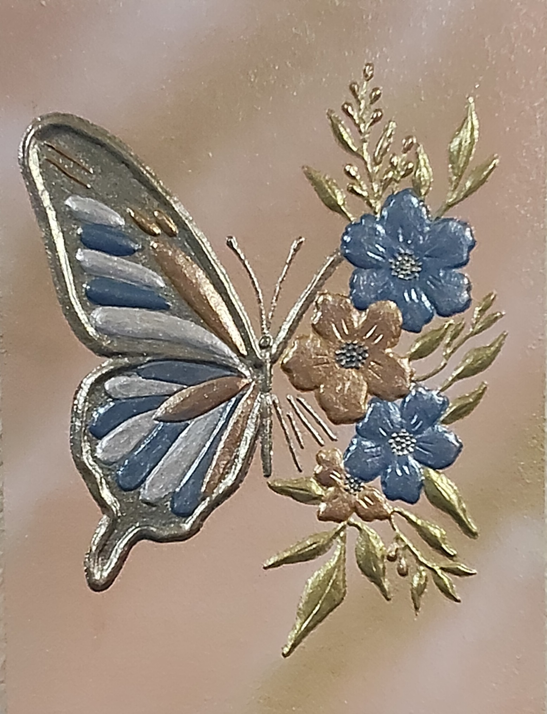

NICOLETA FILIP ART
METAMORFOSIS1
Composición en relieve protagonizada por una mariposa de alas abiertas, acompañada de flores y elementos vegetales sobre un fondo gris azulado.
Sobre la obra
METAMORFOSIS1 presenta una composición formada por una mariposa de alas abiertas situada junto a un conjunto de flores y elementos vegetales.
La mariposa presenta tonos azules, azul oscuro y detalles ocres, mientras que las flores combinan tonos anaranjados, azul oscuro y verdes sobre un fondo gris azulado.
Presentación artística
La obra combina una figura de mariposa en relieve con tres flores de tonos anaranjados y diferentes elementos vegetales.
El fondo presenta un patrón de trazos verticales en tonos azulados que acompaña la composición y contribuye a definir visualmente el conjunto.
Ficha técnica
- Año
- 2026
- Dimensiones
- 30 × 40 cm
- Soporte
- Madera
- Técnica
- Pasta de relieve, acrílico, aerosol metalizado y barniz protector.
- Categoría
- Composiciones mixtas
Si deseas recibir información sobre esta obra, puedes solicitarla directamente.
SOLICITAR INFORMACIÓN →